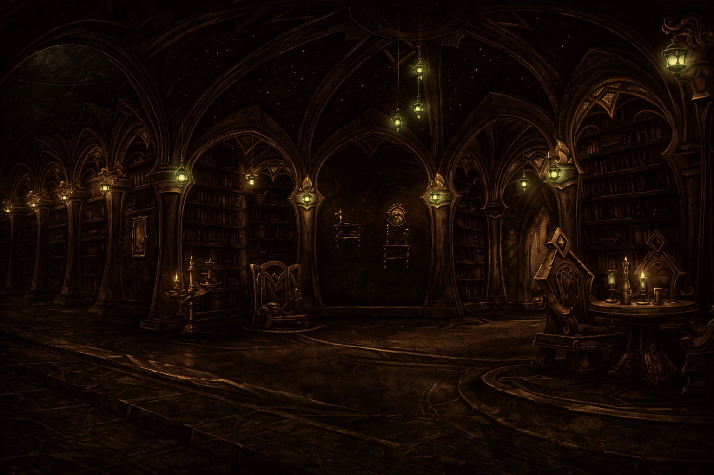

Isle of Quel'Danas
Knowledge is not inherited. It is seized.

Codex Thal'anor · Vol. I
Sin'dorei ven'thar mala'sheen. Quel'thalas anor'theras, val'sharaan ethrel'dorei thas'alah. Mana vel'shan dorei'ana sin'anor thas.
Read →Codex Thal'anor · Vol. II
Thal'dorei sin'shar mana'val. Quel'anor theras dorei'vel, ash'norah sin'thal veleth'aran mala dorei. Sha'las anor thas vel'shan.
Read →Thal'dorei Compendium
Aran'vel dorei sin'thal. Mala'sheen quel'norah ethrel vel'dorei anor'thas. Sha'dorei thal mana veleth'sin anor'shan.
Read →Sunfury Report · III
Vel'shan mana dorei thal'anor. Sin'ethrel quel'sha vel norah'dorei mala thas. Anor sha'vel thal dorei vel'sin mana'aran.
Read →Sunfury Report · IV
Dorei vel'thal sha mana'sin. Quel'norah anor ethrel'vel thas dorei sin'aran mala. Vel sha'thal dorei mana anor'vel norah.
Read →The Sunfury Accord
The findings of the Sunfury Accord are committed to record and dispatched to Magisters' Terrace on a regular basis. Those reports deemed suitable for wider circulation are housed within the Archives, open to those of Quel'Thalas who seek knowledge over comfort.